27/04/2018 — Lại một ca ngừng tim – Lần này có phải OMI không? Hãy dùng kỹ năng từ bài trước!
Bản dịch tiếng Việt của bài "Another Cardiac Arrest – Is it OMI this time? Use your skills from the previous post!" – Dr. Smith’s ECG Blog. Giữ nguyên toàn bộ 14 hình ảnh của bản gốc.
Bài viết của Pendell Meyers, Steve Smith biên tập:
Một bệnh nhân nam 49 tuổi có tiền sử tăng huyết áp (HTN) đột ngột than khó thở, rồi đi bộ dọc phố tới trạm cứu hỏa; vừa bước qua cửa thì ông gục xuống. Đội cứu hỏa tại chỗ lập tức nhận ra ngừng tim và bắt đầu hồi sinh tim phổi (CPR) chỉ trong vài giây. Nhịp ban đầu là rung thất (VF), sau sốc điện chuyển thành VT vô mạch. Trên đường vận chuyển, nhân viên cấp cứu ngoài viện đã sốc điện đưa bệnh nhân ra khỏi VF/VT 5 lần, xen giữa các cơn VF/VT là một nhịp QRS rộng từng lúc. Bệnh nhân đến khoa cấp cứu (ED) của chúng tôi với nhịp có tưới máu, đã được đặt nội khí quản và không có cử động tự phát nào.
Đây là điện tâm đồ 12 chuyển đạo đầu tiên của bệnh nhân, khoảng 10 phút sau lần tái lập tuần hoàn tự nhiên (ROSC) gần nhất:

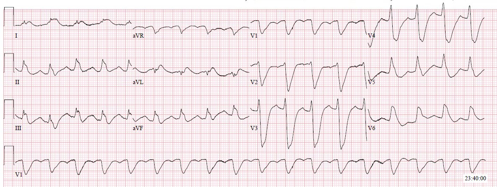
Máy tính chẩn đoán sai là blốc nhánh trái (LBBB), và không có nhận xét nào về thiếu máu cục bộ. Thời gian QRS do máy tính đo được ghi là 138ms.
Việc diễn giải điện tâm đồ này phụ thuộc hoàn toàn vào việc hiểu đúng phức bộ QRS và vị trí điểm J. Mắt bạn bị hút về V2-3 và bạn dễ tin rằng toàn bộ hình dạng đó là phức bộ QRS. Nếu đúng như vậy, phức bộ QRS ở V3 sẽ dài gần 300ms! Điều này là không thể, hoặc khó xảy ra đến mức chúng ta phải coi nó là sai cho đến khi được chứng minh ngược lại.
Trên thực tế, máy tính lại đúng về thời gian QRS ~138 ms. Nếu bạn tìm điểm J thật cẩn thận (xem điện tâm đồ có chú thích bên dưới), bạn sẽ thấy thực ra có ST chênh xuống (STD) rất lớn ở V1-V5, và có ST chênh lên (STE) ở V6, I và aVL.
Giống như ca hôm qua, phần cuối của QRS bị xóa lấp bởi độ lệch đoạn ST rất lớn, giả hình ảnh LBBB ở các chuyển đạo trước tim.
Có nên nghĩ đến tăng kali máu không? Tất nhiên là có, vì với con mắt ít kinh nghiệm thì nó rộng và kỳ dị. Vậy nếu không phân biệt được thì hãy cho một ít calci trong lúc bạn đang hồi sức và làm rõ vấn đề. Nếu là tăng kali máu, calci thường sẽ làm điện tâm đồ thay đổi nhanh.

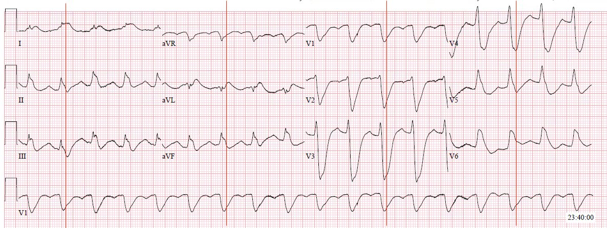
Hãy nhớ, đây là điện tâm đồ ngay sau ROSC. Điều đó có nghĩa là bạn phải cân nhắc xem những thay đổi này có phải do tình trạng ngay sau ROSC hay không.
Theo kinh nghiệm của tôi, độ lớn và sự phân bố hợp lý về mặt giải phẫu của các thay đổi đoạn ST này khiến khả năng chúng chỉ là bất thường sau ROSC thấp hơn, và nhiều khả năng hơn hẳn là thiếu máu cục bộ khu trú toàn bộ bề dày thành tim thực sự do động mạch bị tắc (OMI).
Vẫn còn hai khả năng:
1) Một tổn thương hẹp cố định khu trú, kết hợp với tình trạng lưu lượng thấp của ngừng tim, làm dòng chảy qua chỗ hẹp kém đến mức trên thực tế có tắc mạch trong thời gian ngừng tuần hoàn (down time).
2) Tắc mạch vành cấp (OMI).
Hiển nhiên bệnh sử lâm sàng của ca này hướng tới OMI thực sự. Nhưng trong nhiều ca, tình huống sẽ khó hiểu hơn. Nếu bạn không chắc, hãy ghi lại điện tâm đồ 20-30 phút sau điện tâm đồ đầu tiên sau ROSC. Nếu là khả năng #1 (tổn thương cố định kết hợp với lưu lượng thấp tạm thời trong thời gian ngừng tuần hoàn), các thay đổi sẽ cải thiện hoặc biến mất. Nếu là khả năng #2 (OMI) và động mạch vẫn còn tắc, các thay đổi sẽ tồn tại.
Đây là điện tâm đồ 23 phút sau điện tâm đồ đầu tiên:

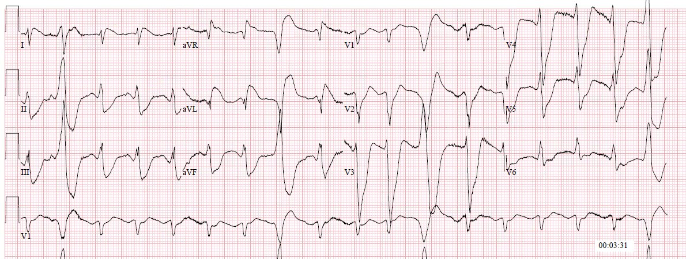

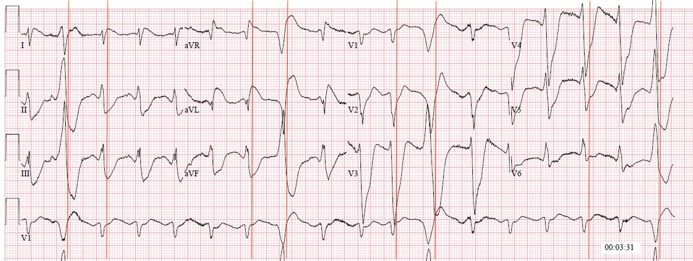
Các điện tâm đồ này có giá trị chẩn đoán OMI sau-bên.
Đáng tiếc là các bác sĩ khoa cấp cứu và bác sĩ tim mạch đều tin rằng các điện tâm đồ này là LBBB. Hồ sơ thậm chí còn ghi rằng “không có tiêu chuẩn Sgarbossa nào”. (Bất kể thực tế là tiêu chuẩn Sgarbossa và tiêu chuẩn Sgarbossa cải biên không áp dụng được trong ca này, thì cả hai thực ra đều có mặt). Từ kinh nghiệm, chúng tôi tin rằng tiêu chuẩn Sgarbossa cải biên có thể áp dụng cho PVC. Ca này ủng hộ nhận định của chúng tôi, vì gần như cả 12 chuyển đạo đều có một PVC với ST đồng hướng hoặc ngược hướng quá mức.
May mắn cho bệnh nhân, nhóm điều trị đã quyết định đưa bệnh nhân vào phòng thông tim (cath lab) vì ông đã than khó thở (SOB) trước khi gục xuống trước mặt lính cứu hỏa và bị ngừng tim do VF. Kết quả troponin T dương tính ban đầu là 0,22 (bình thường dưới 0,01 ng/mL) cũng góp phần đưa bệnh nhân vào phòng thông tim một cách phù hợp.
Trong phòng thông tim, người ta phát hiện bệnh 3 nhánh mạch vành mạn tính nặng, gồm các chỗ hẹp trông có vẻ mạn tính ở thân chung động mạch vành trái (40%), LAD đoạn gần (90%), “tắc hoàn toàn mạn tính tất cả các nhánh chéo”, LCX đoạn gần (75%), RCA đoạn giữa (80%), cùng với tắc 100% cấp tính do huyết khối ở LCX đoạn giữa-xa (hiển nhiên là thủ phạm). Một stent đã được đặt vào tổn thương thủ phạm ở LCX, và dòng chảy TIMI 0 được cải thiện thành dòng chảy TIMI 3 sau can thiệp.
Đây là các hình ảnh chụp mạch vành:

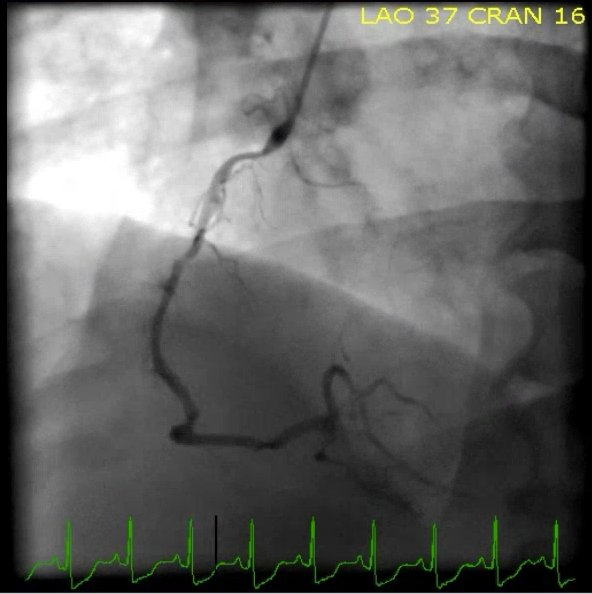

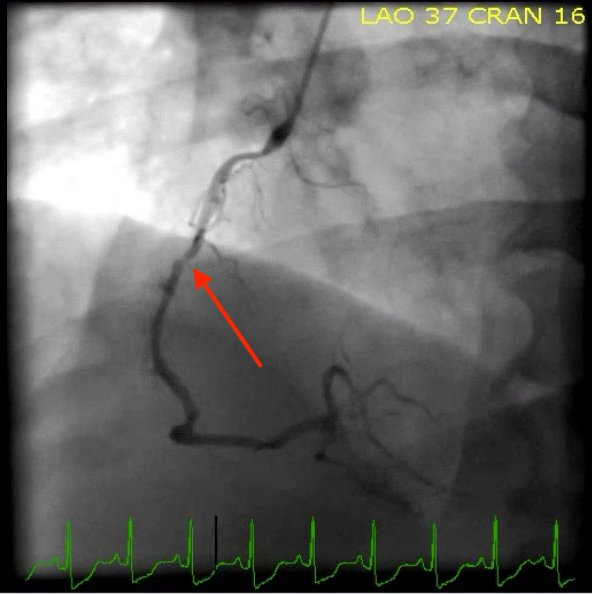

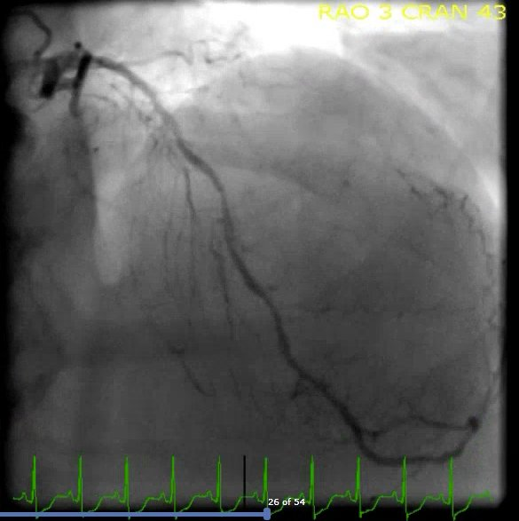

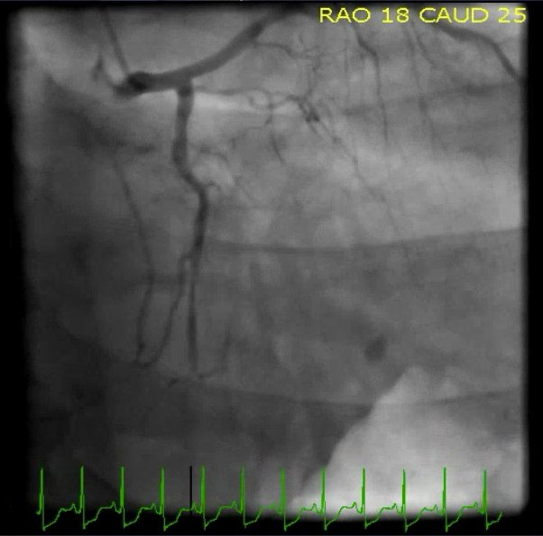

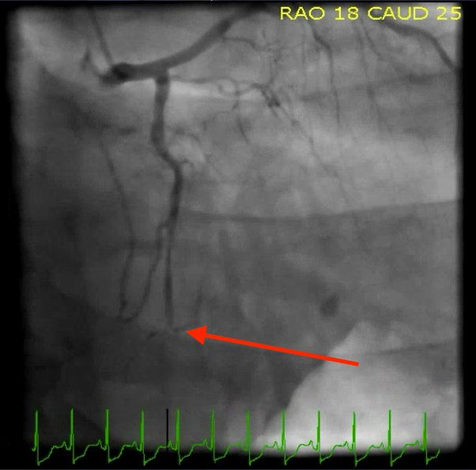

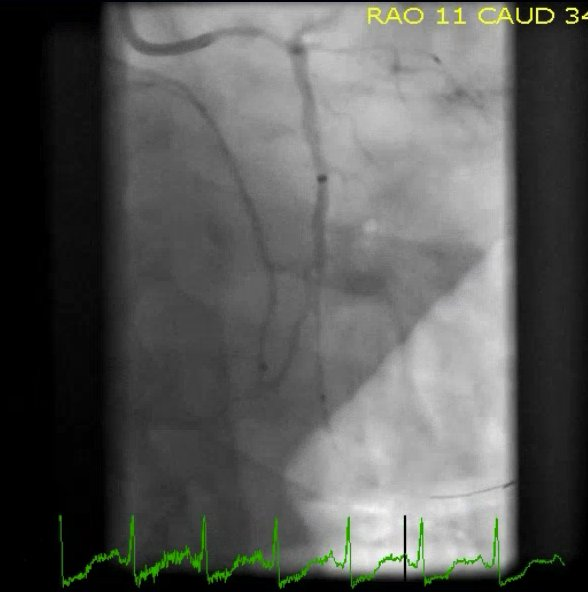

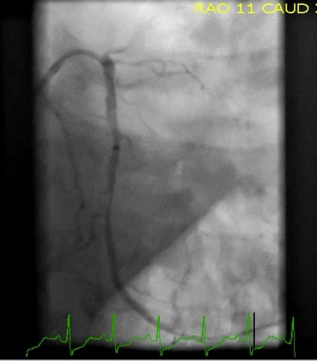

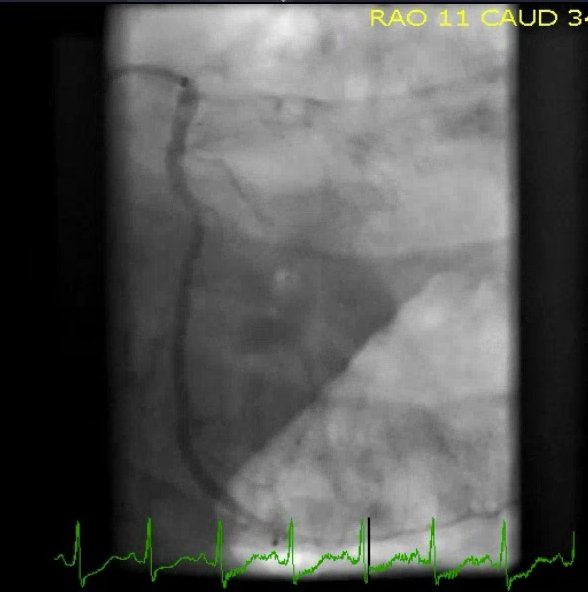
Đây là điện tâm đồ của bệnh nhân khoảng 18 giờ sau:

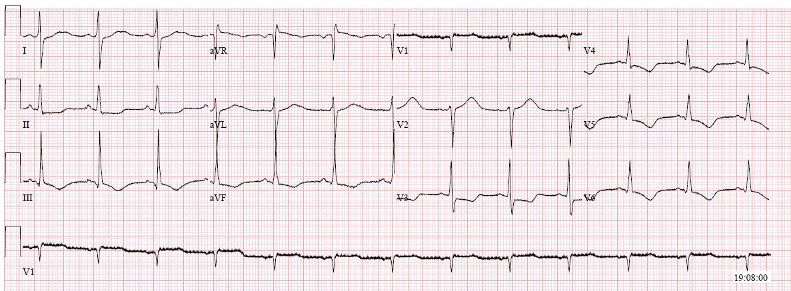
Troponin T của bệnh nhân đạt đỉnh 11,78 vào khoảng 14 giờ sau khi nhập viện. Điều này cho thấy một nhồi máu cơ tim rất lớn và báo trước tiên lượng xấu hơn nhiều.
Điện tâm đồ ngày hôm sau:

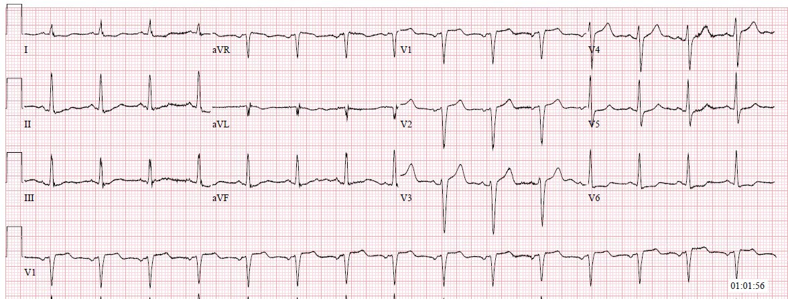
Đáng tiếc là bệnh nhân bị tổn thương não do thiếu oxy. Tôi không có đủ chi tiết để giải thích vì sao điều này xảy ra ở một bệnh nhân có thời gian ngừng tuần hoàn ngắn, được người xung quanh hồi sinh tim phổi ngay lập tức, và được điều trị tái tưới máu đúng thời điểm. Cuối cùng bệnh nhân tử vong 2 tuần sau đó.
Những cạm bẫy điện tâm đồ trong ca này là thường gặp, đặc biệt ở những bệnh nhân OMI nặng nhất. Mô hình STEMI và NSTEMI không chuẩn bị cho chúng ta trước những ca như thế này. Mô hình STEMI và NSTEMI thất bại ngay cả ở những bệnh nhân có phức bộ QRS trông bình thường, và còn thất bại nhiều hơn khi phức bộ QRS ngày càng bất thường. Chỉ có kỹ năng đọc điện tâm đồ nâng cao và sự đào tạo mới giúp được những bệnh nhân này trong những ca mà bệnh sử lâm sàng không sẵn dẫn tới hướng xử trí đúng.
Những điểm cần học:
Tìm phần cuối của phức bộ QRS và điểm J là một kỹ năng cơ bản nhưng hết sức quan trọng.
Nếu bạn thấy một phức bộ QRS có vẻ cực kỳ rộng (lớn hơn 200ms), hãy nghĩ đến tăng kali máu và/hoặc việc đo sai điểm kết thúc của QRS (mà nguyên nhân quan trọng nhất là phức bộ QRS bị xóa lấp bởi độ lệch đoạn ST)
Bạn phải nhận ra được STEMI/OMI thành sau, mặc dù nó bị mô hình STEMI và NSTEMI xem nhẹ, và trong thực hành thực tế còn bị một số bác sĩ (cấp cứu và tim mạch) xem nhẹ hơn nữa.
Hãy tìm thêm bằng chứng hỗ trợ cho OMI bên trong các PVC.